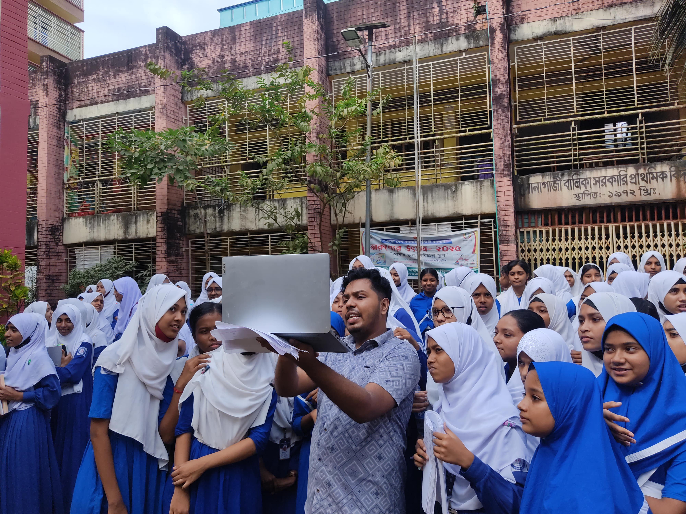

Co-Founder & Lead Programming Trainer · ZAN Tech Social Impact Initiative
Project Uddipon
Most STEM opportunities in Bangladesh cluster around a handful of cities. A student in Feni or Sreemangal doesn't get less curious than one in Dhaka, they just get fewer chances to ever touch a robot, write a line of code, or sit through an AI demonstration that isn't just a video. Project Uddipon (উদ্দীপন — "inspiration" or "ignition") is ZAN Tech's answer to that: instead of waiting for students to come to a lab, we bring the lab to them, for free, anywhere in the country that will have us.
I co-founded it alongside Hana Sultan Chowdhury and lead the programming side of every workshop we run. The format is deliberately hands-on and non-negotiable: no lectures, no slides-only sessions. Students build line-following and obstacle-avoiding robots with real Arduino boards, sensors, and motors; get an actual introduction to programming logic and AI/ML through visual, real-life examples; and run practical IoT projects using sensor data collected from problems they actually recognize. Every kit, every component, every laptop we need travels with our team — the institution pays nothing, ever.
A specific commitment runs through the whole initiative: nearly half of everyone we've taught is a girl, and we run dedicated sessions at girls' schools specifically to make sure technology education in Bangladesh doesn't quietly become something only boys get pointed toward. We've now reached over 5,000 students at 15+ institutions across 3+ districts — schools, colleges, and universities alike, from Feni Government College and Sonagazi Girls' school to IUB's Fab Lab and IUBAT.
A workshop isn't the end of the relationship. After every session, we help the institution set up its own Robotics or STEM club, train the teachers who'll actually be there day to day, and stay reachable afterward with project ideas and mentorship — because a single afternoon of building a robot means a lot less if there's nothing for that curiosity to plug into once we leave campus.
Everything about how to invite Uddipon to a school, the full list of institutions we've visited, our workflow, and the rest of the team behind it is on the project's own site: projectuddipon.zantechbd.com.
5000+
Students Reached
15+
Institutions Visited
3+
Districts Covered
Free
Always & for All
In the Field
